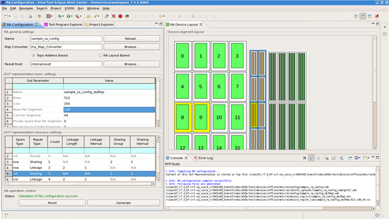
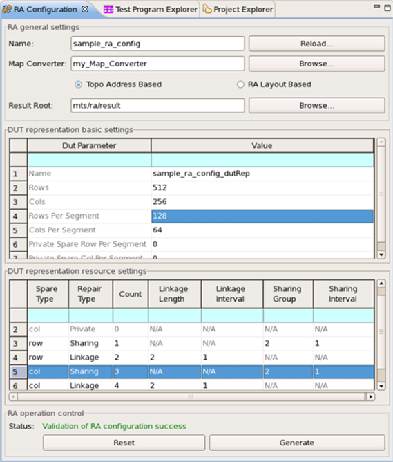

RA Configuration Perspective
SmarTest has a dedicated RA Configuration Perspective which gives a complete view of RA configuration settings and layouts. You can use this Perspective to create and edit RA configuration files.
This Perspective has all pages of RA Configuration wizard within one view and you can do all settings here. It also provides an extra space for viewing the DUT layout, which allows you to easily view complex RA configurations and many segments or spare resources.

The RA Configuration Perspective contains all the following parts together:
- RA general settings
- DUT representation basic settings
- DUT representation resource settings
- RA operation control
- Device segment layout under RA Device Layout
- MTP Build under Console
The following figure shows the left part of an RA Configuration Perspective.

See RA Configuration wizard for how to set up parameters for RA Configuration, DUT representation basic settings and DUT representation resource settings, and for the setup results and DUT representation layout.
Functional changes
- Introduced in MTP 3.3.3